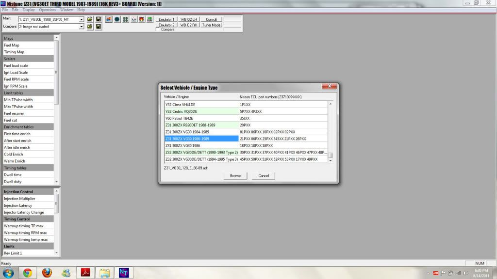
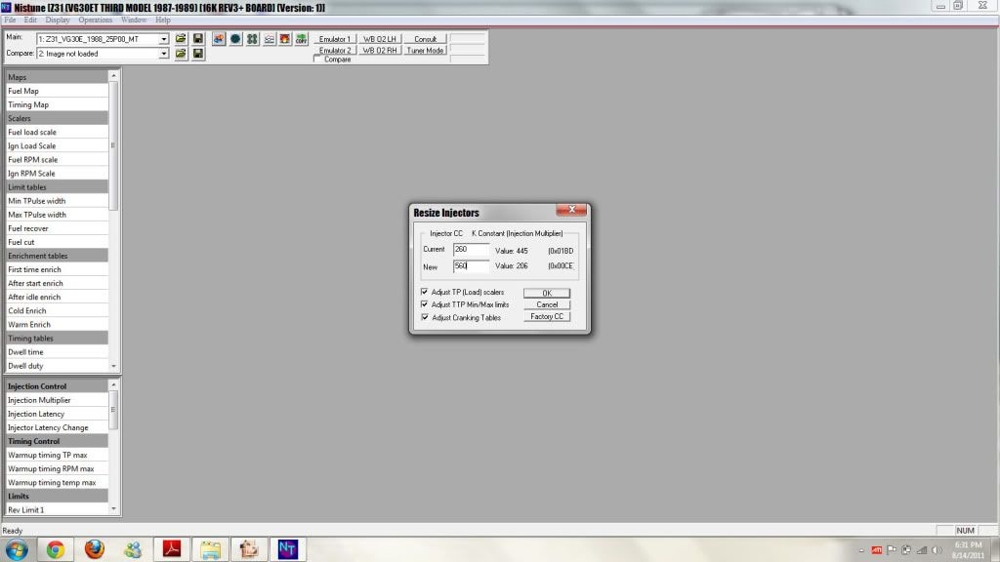
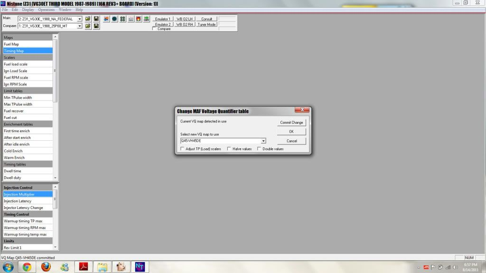
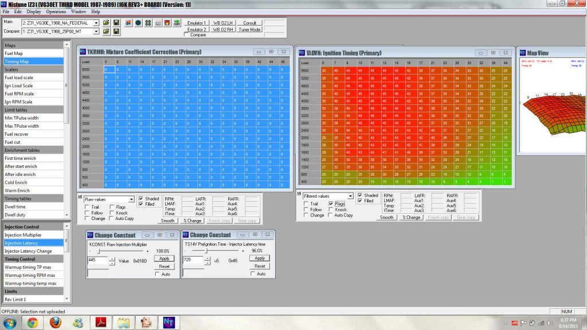
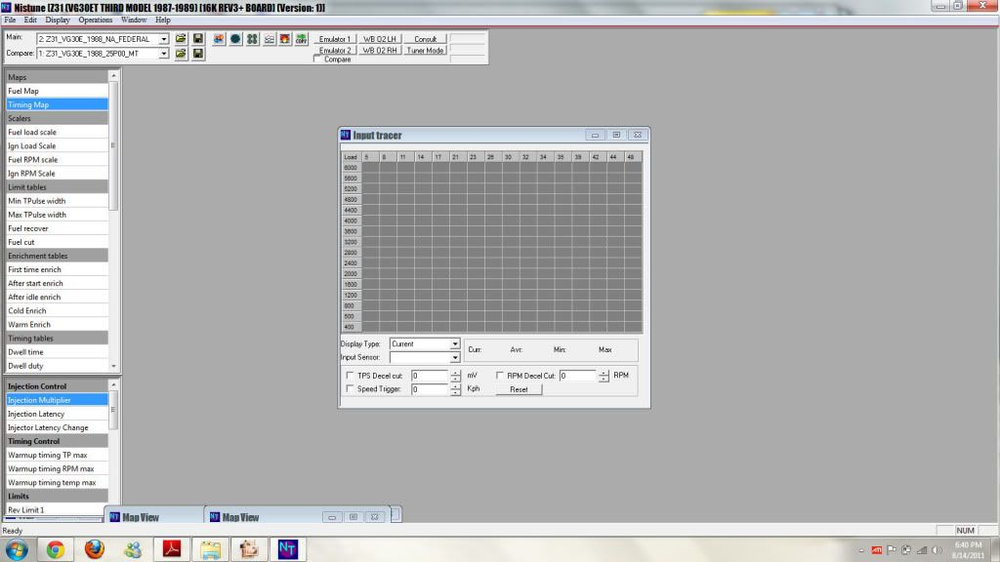

-
So im trying to get the Z ready for heading to get an alignment and tune, without question it's much easier to move it under it's own power. This is a question of "am i doing this right?" I'm not trying to pump 18lbs of boost and 40deg. of timing, just enough to get her down the road and in/out of the shop doors. This may also help anyone with initialization of a home brew tune, but whatevs bro.........
Also, check out idle quality and general banter video
Set-up:
'88 VG33ET
480cc/min @ 43.7psi, bumped to 560cc/min @ 60psi assuming 100% duty
HX35W w/external 44mm gate
Innovate LC-1 w/db-9
JWT S.2 cams
big ass piping
15° base timing at running temp/idle
---- i think thats most info needed for getting this in depth ----
Lets start with initial configuration
- open nistune
- select .adr file

- select matching .bin file to matching ECU
- resize injectors (if aftermarket) in my case flow rate of 560cc/min @ 60psi

- Resizing the MAFS comes after resizing the injectors(?), in my case a P60 found on the 4.5L Infinity Q45 -----note 1/2'ing values in a blow-thru setup

- Now it's time to set my fuel table to 14.7 (0 raw value), uncheck the "flags" box to disable ECU 02 feedack, and check my idle quality, taking into consideration minor tweaks to K-value and latency to smooth the RPM and 02 sensor readings

- While doing the above, i should be running an "AFR trace" to determine where to trim and add on cells of the fuel map during a minimum boost run log **being cautious of knock, or lean conditions**, as this sets "target" AFR's for the ECU based off the VQ map

From that point it comes down to continuing with fine tuning the fuel and ign. maps, or take her to the tuner?
Am i missing a step?
Are there numbers or values i can easily improve?
I have ran logs of partial and 7lbs of boost runs, can i use this to improve what i have?
Would the above mentioned logs be useful to post?
Should i even mess with the fuel maps before seeing a tuner (ign. maps are out of the question, as most every source says don't F* with these until you're on a dyno)[/url] -
Isn't this unnecessarily high for a starting tune? or are you starting really high and pulling fuel and adding timing to get the base tune?Are there numbers or values i can easily improve?
480cc/min @ 43.7psi, bumped to 560cc/min @ 60psi assuming 100% duty
I know it's safer to start with more fuel and add ign timing- but that sounds like almost triple what the stock system is capable of outputting at idle. I don't think the engine wouldn't be drawing a widely different amount of air at idle going from stock to the S2 cams… ? -
Get it to idle and drive under no boost. Bring it to the tuner. A good tuner can set up most of the fuel and low-mid range timing maps without even doing a pull. Dialing ign timing in on the dyno is the kicker. If you want to tune it yourself get a healthy AFR at full boost and be conservative with timing.Usual Z31 suspect: Garage Queen (aka broken)

-
Careless wrote:
Isn't this unnecessarily high for a starting tune? or are you starting really high and pulling fuel and adding timing to get the base tune?
I know it's safer to start with more fuel and add ign timing- but that sounds like almost triple what the stock system is capable of outputting at idle. I don't think the engine wouldn't be drawing a widely different amount of air at idle going from stock to the S2 cams… ?
Heck i donknow, maybe i'm thinking in reverse.. planned RWHP will require about 560cc's, so at *planned* 18psi of boost the fuel psi will be around 78psi off setting the positive pressure in the LIM
300zxturboftw wrote: Get it to idle and drive under no boost. Bring it to the tuner. A good tuner can set up most of the fuel and low-mid range timing maps without even doing a pull. Dialing ign timing in on the dyno is the kicker. If you want to tune it yourself get a healthy AFR at full boost and be conservative with timing.
idle is good, at least in an inexperienced opinion.. Dyno is in order after i pull the trans to figure out if the rear main or oil pan is leaking :insulte it's slow, but enough for me to change it. Got it to boost, went from 9's-10's to 13's/14's on boost so i know i'm a bit lean, it's better than washing out the cylinder walls during my first attempts
So i did plenty of reading and it seems i was working in the wrong direction(?) my earlier attempts were K-value around 340's and 750 latency, today i upped the K and ticked the latency down , I did feel it breaking up after 3K/rpm during some log runs today.. From what i can gather that issue sounds like the K needs more tuning in as AFR's were steady and safe. Though I'm fairly happy with where the idle is at, i did have to set it around 900-1K/rpm due to no idle/emission controls at all. I was dealing with a high load to no load stall issue when the RPM's settled before trying the new method today, but my new K and latency seemed to have solved that.
-
Don't push it at 13:14 afr…you will be sorry.Usual Z31 suspect: Garage Queen (aka broken)
-
300zxturboftw wrote: Don't push it at 13:14 afr…you will be sorry.
nooooo sir :lol: i know better than that, mostly trying to target 14's to check K value against a 0'ed out fuel table -
THe 02 sensor feedback/enabling cells is supposed to keep it in loop of 14.7. With it off you can usually check AFR's for what it will look around boost.Usual Z31 suspect: Garage Queen (aka broken)
-
Tuners didn't become tuners by taking their cars to tuners…300zxturboftw wrote: Get it to idle and drive under no boost. Bring it to the tuner.85 Z31 6.0 LSX turbo 766whp/792wtq
04 GTO, LS6, big cam, porting, N20… underway for summertime daily driver. -
^ True, but that depends on how willing the individual is to risk their engine on it. I don't think my statement was so far fetched, given that I have addressed a few pointers for Nistune and he seems like he wants it tuned by his local guy.Usual Z31 suspect: Garage Queen (aka broken)
-
Great info, keep it coming. I'll be going down the same path very soon…87 300zx turbo ~600whp
Built motor, ported heads, stage 2 cams, oversized valves, gutted maxima plenum, etc, etc, etc..... -
+1vgVQ wrote: Great info, keep it coming. I'll be going down the same path very soon…
-
Is it all that dangerous if you go in very small, very conservative increments, erring on the rich side initially and keeping the timing out until you're positive you know where you are?300zxturboftw wrote: ^ True, but that depends on how willing the individual is to risk their engine on it. I don't think my statement was so far fetched, given that I have addressed a few pointers for Nistune and he seems like he wants it tuned by his local guy.
I was planning to get mine tuned as far as I could then get a tuner to put it on the dyno and get that last little bit out of it…maybe? -
i am still trying to get my damn nistune to connect on my winodws 7 laptop....the laptop sees the ecu then i turn the key but keeps asking for drivers86 NA
87 Turbo
Member of the "zetto sun-ichi" group
Local MN car forum/club anyone welcome..... fivezeroseven.net join! -
That sucks. When I bought my netbook for replacement of my ancient Dell I didnt have to load anything other than the rom pack and software. Soon as I plugged it in it work fine. Have you looked at the info he has on the Nistune forums?edicer2 wrote: i am still trying to get my damn nistune to connect on my winodws 7 laptop....the laptop sees the ecu then i turn the key but keeps asking for driversHmmm, Whats next?
Full Size Bronco, smashing shit.
84ZXT -
If your win7 is x64 you may have to force the driver to be installed.edicer2 wrote: i am still trying to get my damn nistune to connect on my winodws 7 laptop....the laptop sees the ecu then i turn the key but keeps asking for drivers
I believe these nistune drivers are digitally unsigned.
There is a process to having Windows 7 X64 work with this, but for the average computer user, its a challenge.
Its best to use x86 (32bit) Windows for Nistune.
Let me know what you have.
Maybe I could perform a remote session with you to get it work.

Copyright © 2006–. All rights reserved. Privacy Policy